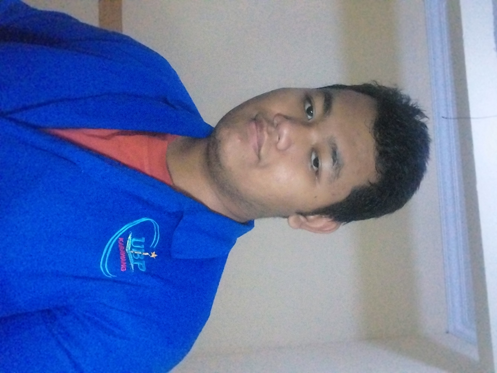

Putra Pamungkas
Student of University of Buana Perjuangan Karawang
PHP
40%
CSS
60%
Python
40%
Personal Statement
Dedicated to perpetual growth and driven by an insatiable appetite for acquiring new knowledge, I am committed to continuously expanding my horizons and embracing novel challenges. With a fervent enthusiasm for learning, I approach every opportunity as a chance to evolve and excel. My unwavering dedication to self-improvement fuels my passion for innovation and drives me to explore new avenues of personal and professional development. As I embark on this journey of lifelong learning, I remain steadfast in my pursuit of excellence and unwavering in my commitment to continuous improvement
Education
Currently pursuing studies at Universitas Buana Perjuangan Karawang, in the fourth semester
Experience
Junior Web Developer BLK Karawang 2023
- Introduction of HTML, CSS, and Javascript and how it works.
- Receiving a three-day introduction to the work environment training.
- Create and completing a simple library website as a final test.